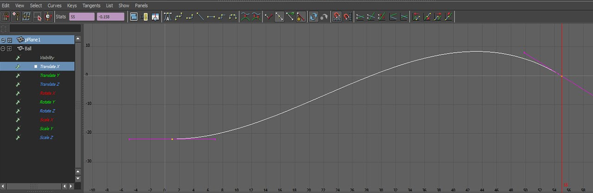
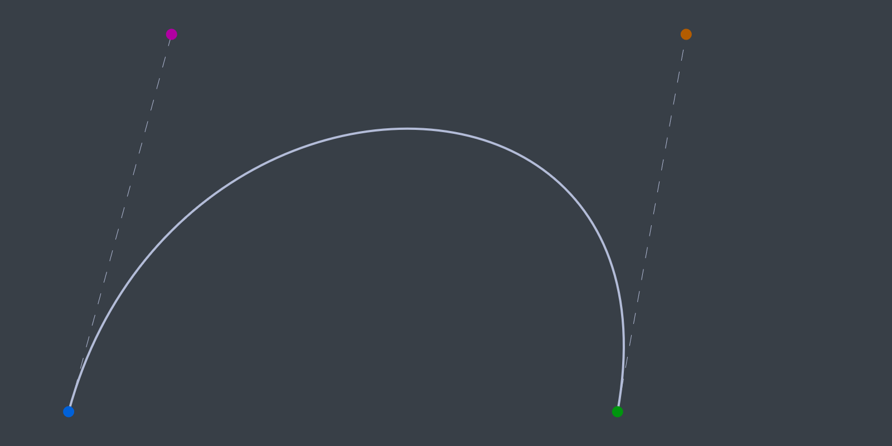
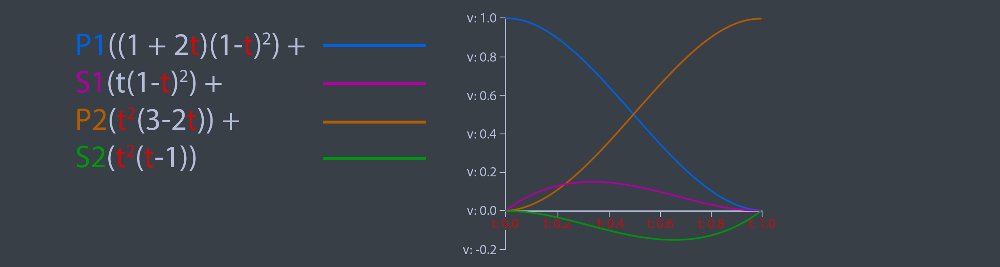
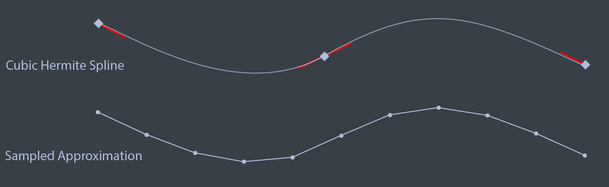
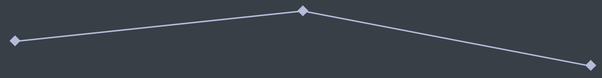
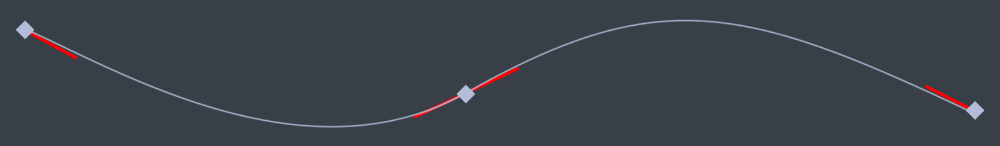
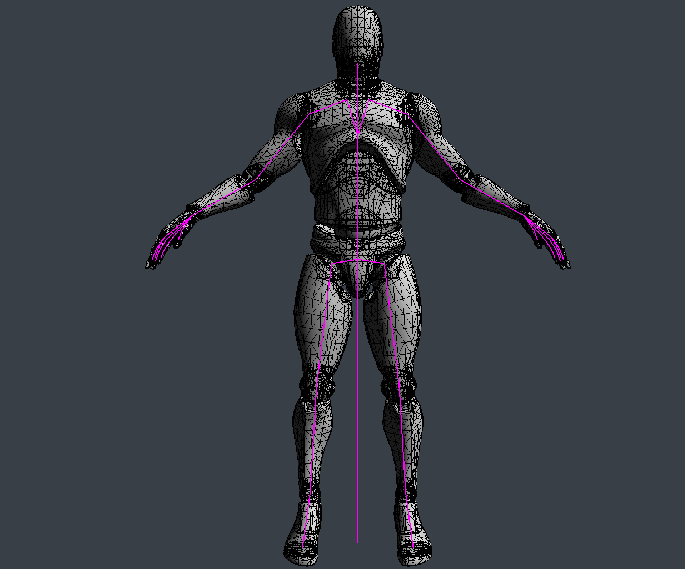
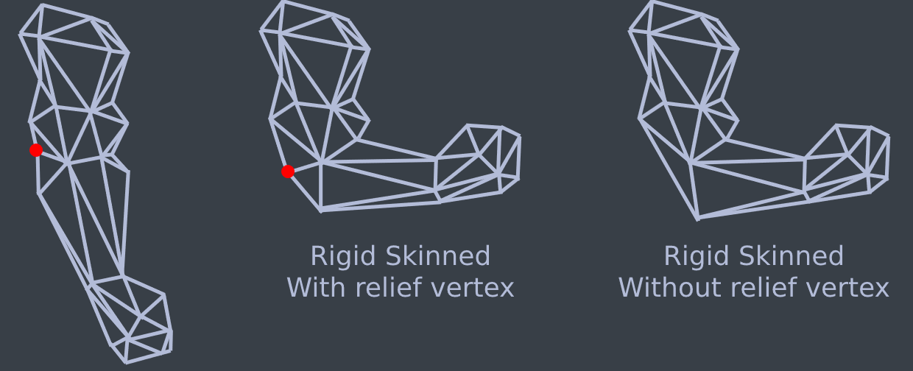
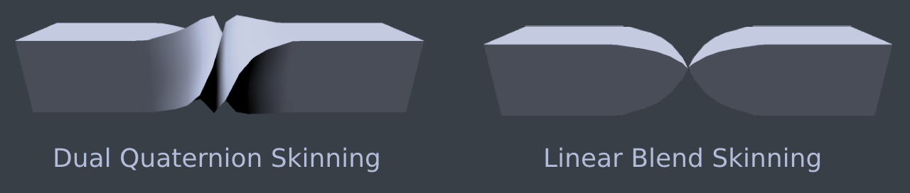

Generally, game animation can be broken up into three distinct steps. These steps are pose generation, pose modification and skinning. The steps are usually performed in order.
When talking about humanoid animations, a pose refers to the skeleton. Specifically the skeleton posed to match a frame of animation. You would generate a pose by sampling an animation clip.
Pose modification is exactly what it sounds like, modifying the pose before it is skinned. Blending two animation clips to hide a transition would be considered pose modification, so would an IK system that adjusts a leg to keep in on top of terrain. This site will cover animation blending, the book covers blending in more detail. The book also covers more advanced topics like IK.
Given a mesh and a pose, skinning is the process of deforming the mesh so that is matches the given pose. The two most common skinning methods are matrix palette skinning and dual quaternion skinning. We will cover matrix palette skinning on this page, both are covered in the book.
The book covers everything from the basics of creating an OpenGL 3.3 enabled window to advanced animation techniques like dual quaternion skinning, crowd rendering and inverse kinematics.
All of the math required to build an animation system is covered in the book. I also cover Vectors, Matrices, Quaternions and Transform hierarchies on my blog, Gabor Makes Games.
Modern animation systems are driven by curves. These curves are generally authored by artists. An animation window might look like this
Games used to sample these animation curves at set invervals, then, interpolate the samples. Sampling animations like this yields an approximation to the animation curve. The approximation looks pretty good. The main inspiration for sampling curves at set time intervals is speed. Modern hardware is powerful enough to evaluate animation curves in real time, these days games use animation curves instead of sampled approximations.
There are two types of cubic curves that games use for animation, Bézier splines and Hermite splines. Blender uses Bézier, Maya and Unity use Hermite. Which type of curve you want to use is up to you. Deriving the formula for evaluating these curves is beyond the scope of this page, but it's covered in detail in the book.
A Cubic Bézier curve contains four points, the start and end points as well as two control points. Let's explore how these curves can be expressed in code. The definition of the Bezier data structure is trivial, it holds two points and two control points.
template<typename T>
class Bezier {
public:
T P1; // Point 1
T C1; // Control 1
T P2; // Point 2
T C2; // Control 2
};
This is a naive interpolation function for Bézier curves.
template<typename T>
inline T Interpolate(const Bezier<T>& curve, float t) {
T A = lerp(curve.P1, curve.C1, t);
T B = lerp(curve.C2, curve.P2, t);
T C = lerp(curve.C1, curve.C2, t);
T D = lerp(A, C, t);
T E = lerp(C, B, t);
T R = lerp(D, E, t);
return R;
}
Visually, the six lerps in the above code sample work like this:
Plotting the curve is trivial. First, initalize a curve segment to draw. If you want to draw longer, more interesting curves, more segments can be added.
Bezier<vec3> curve; curve.P1 = vec3(1, 5, 0); curve.P2 = vec3(9, 5, 0); curve.C1 = vec3(2, 0.5, 0); curve.C2 = vec3(10, 0.5, 0); vec3 red = vec3(1, 0, 0); vec3 green = vec3(0, 1, 0); vec3 blue = vec3(0, 0, 1); vec3 magenta = vec3(1, 0, 1);
Next, draw the start, end and control points. To make the curve easier to see, draw lines from the start and end points to the appropriate control points.
// Draw all relevant points DrawPoint(curve.P1, red); DrawPoint(curve.C1, green); DrawPoint(curve.P2, red); DrawPoint(curve.C2, green); // Draw handles DrawLine(curve.P1, curve.C1, blue); DrawLine(curve.P2, curve.C2, blue);
Finally, plot the actual curve. The X axis represents time, the Y axis represents value. Time is normalized to be in the 0 to 1 range.
// Draw the actual curve
// Resolution is 200 steps since last point is i + 1
for (int i = 0; i < 199; ++i) {
float t0 = (float)i / 199.0f;
float t1 = (float)(i + 1) / 199.0f;
vec3 thisPoint = Interpolate(curve, t0);
vec3 nextPoint = Interpolate(curve, t1);
DrawLine(thisPoint, nextPoint, magenta);
}
The above code should draw something that looks like this.
The naive implementation provided before can be optimized. The steps needed to optimize it are covered in the book, the final function that is presented in the book looks like this:
template<typename T>
inline T Interpolate(const Bezier<T>& curve, float t) {
return curve.P1 * ((1.0f - t) * (1.0f - t) * (1.0f - t)) +
curve.C1 * (3.0f * ((1.0f - t) * 1.0f - t) * t) +
curve.C2 * (3.0f * (1.0f - t) * (t * t)) +
curve.P2 * (t * t * t);
}
This optimized version of the Interpolate function is evaluating the basis functions of a Bézier curve, the basis functions are shown below.
Many applications such as Maya use Cubic Hermite Splines for animation instead of Béziers. Unlike Bézier splines, a hermite spline doens't use control points. Instead, the hermite spline records tangents (or slopes) at the control points. The point basis function of a Hermite Spline is shown below. P1 and P2 are the start and end points of the spline, S1 and S2 are the slopes, or tangents at P1 and P2 respectivley.
A hermite spline has the following basis functions:
Hermite splines are implemented similarly to Bezier curves. The code below demonstrates how to evaluate the basis functions. The curve to plot a Hermite spline is the same as the code to plot a Bézier spline.
template<typename T>
class Hermite {
public:
T P1; // Point 1
T S1; // Slope 1
T P2; // Point 2
T S2; // Slope 2
};
template<typename T>
T Interpolate(const Hermite<T>& curve, float t) {
return curve.P1 * ((1.0f + 2.0f * t) * ((1.0f - t) * (1.0f - t))) +
curve.S1 * (t * ((1.0f - t) * (1.0f - t))) +
curve.P2 * ((t * t) * (3.0f - 2.0f * t)) +
curve.S2 * ((t * t) * (t - 1.0f));
}
The formula for evaluating curves doesn't change between scalars or touples. It's the same formula for a float as it is for a vec2, vec3 or quat. Whatever data type T is will work so long as T operator*(const T& t, float f) and T operator+(const T& a, const T& b) are defined. There is one caveat, quaternions need to be neighborhooded and normalized.
Let's explore what it takes to generate a pose from an animation for a game character. A Pose is a hierarchy of Transform objects. This hierarchy acts like a skeleton for the character. When an animation clip is sampled, it reutrns a Pose. The returned pose is a snapshot of the skeleton at a specific time of the animation clip.
An animation clip is made up of animation tracks. Every animated joint in a skeleton (every Transform in the resulting pose) can be animated by a track. Each track is made up of several frames. A frame contains a time, a value as well as incoming and outgoing tangents. The tangents are needed to build curves out of Cubic Hermite Splines. The image below shows the relationship between each component required to generate a pose.
The most important part of pose generation is the animation tracks. Digital Content Creation (DCC) tools like Maya, 3DS Max or Blender allow animators to author animation by defining tracks. Unity's Animation View is a great example of an animation curve editor. These tracks express change over time using curves. An animation track often looks similar to this:

An animator usually animated characters in a DCC tool using curves similar to what is shown in the above picture. In the early 2000's, most game animation pipelines would use an offline tool which evaluates the animation curves at set intervals and stores the values.
At playback time, the game would linearly interpolate between the sampled values. This sampled animation method is faster, but it takes more memory. The approximated curve is generally close enough to be indiscernible at playback time. A comparison of a cubic hermite spline and it’s sampled counterpart is shown in the image below
When defining an animation curve, generally, it follows one of three interpolation methods: Constant, Linear or Cubic. Cubic curves can be expressed using any cubic equation like Bézier (what Blender does) or Hermite splines (what Maya does). We’re going to use Hermite splines to represent cubic curves.
A constant curve keeps its value the same until the next keyframe, sometimes this type of curve is called a step curve. Visually, a constant curve looks like this:
A linear curve interpolates between two frames in a linear fashion (a straight line). If the samples of a linear track are close enough it can start to approximate other types of curves. A linear curve looks like this:
With cubic curves, we can express complex curves using very little data. A cubic curve looks like this (tangents are the lines coming out of the keyframes):
The granularity of the interpolation type is up to you to decide. The animation system built in Hands-On C++ Game Animation Programming defines the interpolation type per track. This means a vector track will use the same interpolation for all it's components. My Minimal animation demo can have different interpolation types between frames, like Unity.
What is a frame of data? Well, that depends on the interpolation type. If the interpolation is constant (step) or linear, a frame is just some time and a value. When the interpolation is cubic (besizer or hermite) we need to store tangents as well. A hermite curve needs values for the the slope of each frame. Since a curve is made up of many segments, each frame needs to know how to handle both the incoming and outgoing tangents.
There is one more important consideration to make, how wide is a frame? By this I mean what is the data stored in the frame? Is it a scalar, a vector or maybe a quaternion? To make that decision, we actually have to skip forward a bit and think about how we might want to create tracks.
To create an animation track, we could either build a scalar track and all higher dimension tracks would be composed of a number of scalar tracks. Or we could build specialized track types, we could have a salar track that contains scalar values, a vec3 track that contains vec3 values, etc... The book uses specialized tracks.
The advantage of building higher order tracks from multiple scalar tracks is that each component of a track could be interpolated differently. Each component can also have a different number of keyframes. The disadvantage is additional complexity of implementation. In this context, the component of a track refers to the components that make up the data type of the track. For example, the x, y and z components of a vec3 track.
The advantage of creating specialized higher order tracks is mainly in implementation. Since the Hermite function is templated, it could handle scalar values, vec3 and even quat values. Templates can be used to avoid having to write unique code for each of the higher order tracks.
A typical frame structure is shown below. If the interpolation type doesn’t need tangents, ignore them. The tangents and value of the frame is stored using floating point arrays, the size of a frame (the length of these arrays) is defined as a template paramater.
template<unsigned int N>
class Frame {
public:
float value[N];
float in[N];
float out[N];
float time;
};
typedef Frame<1> ScalarFrame;
typedef Frame<3> VectorFrame;
typedef Frame<4> QuaternionFrame;
A track is a collection of frames, along with some information about how to interpolate them. Typically, a track class would contain the following members.
template<typename T, int N>
class Track {
protected:
std::vector<Frame<N>> mFrames;
Interpolation mInterpolation;
public:
// Rest of the class
}
typedef Track<float, 1> ScalarTrack;
typedef Track<vec3, 3> VectorTrack;
typedef Track<quat, 4> QuaternionTrack;
Representing a track this way means that each component is tied to the same time on the timeline. You can’t make a keyframe in the X component of the track without also adding a keyframe to the Y and Z components as well. The vec3 track below shows how the X, Y and Z components of the vector have keyframes at the same time values, even if those frames are not needed.
The most important function of the track is Sample. The signature of this function takes a floating point number and a boolean, the function returns a floating point number.
template<typename T, int N> T Track<T, N>::Sample(float time, bool looping);
The Sample function starts byadjusting the time argument to be valid. For the time to be valid, it must fit within the start and end times of the track. Next, the function finds the frame index at the atjusted time. This way, you can increment a timer, pass it in to the Sample function, and assign the result of the Sample function to that timer variable. The Sample function will kep the timer in a proper range.
With our current setup, there exists tracks for scalars, vectors and quaternions. Next we need a higher order track, one that can encode the change of a Transform object over time. In this context, a Transform object is made up of three components: position, rotation and scale.
struct Transform {
vec3 position;
quat rotation;
vec3 scale;
}
If we where to template the Track class to represent a Transform it would look something like this typedef Track<Transform, 10> TransformTrack_BAD; Not all transform tracks will animate every component of a transform object. Some animation might only animate the rotation for example. Because not all transform components need to be animated, making a frame that has 10 unique floats for every value and tangent is wasteful.
There is an additional piece of data that must be kept somewhere, a reference to the transform object that the transform track is animating. Typically, this type of reference is expressed as an index into the array that contains the scene hierarchy, or sometimes using a pointer. A transform track will always have a target object. Embedding this information in the transform track class would be very useful. The TransformTrack covered in the book has the following member variables:
class TransformTrack {
protected:
unsigned int mId;
VectorTrack mPosition;
QuaternionTrack mRotation;
VectorTrack mScale;
float mStartTime;
float mEndTime;
protected:
void RecalculateDuration();
pulic:
Transform Sample(const Transform& t, float time, bool looping);
// Rest of the class
}
The TransformTrack class does not need to be templated. It contains the following data:
Any of the component tracks (position, rotation or scale) could be empty. When the Sample function is called it must be provided a default Transform. If a TransformTrack has an empty component track, the missing value is taken from the passed in default Transform object.
The TransformTrack class caches start and end times. Any time one of the tracks changes, the cached times must be re-calculated. The start time is the lowest of the component track start times. The end time is the highest of the component track end times.
The TransformTrack only animates the values of one Transform object over time. Typically a character is made up of many transforms, not all of which are animated. Before exploring how to combine TransformTrack objects into an animation clip, let's explore how the hierarchy that transform tracks animate works.
Think of a pose as the skeleton of an animated character at a specific point in time. In practice, a pose is a hierarchy (directed acyclic graph or DAG) of transform objects. The state of each transform affects all of its children. We often say that a skeleton is composed of joints or bones, in practice both joints and bones are represented by Transform objects.
There are many strategies for storing the parent child relationship of a Pose, the one used in Hands-On C++ Game Animation Programming is keeping two parallel vectors. One vector contains transform objects, the other contains integers that represent the parent of that transform. Not all joints have parents, if a joint doesn’t have a parent, it’s parent value will be nagative.
class Pose {
protected:
std::vector<Transform> mJoints;
std::vector<int> mParents;
// Rest of class
Each of the joints in the pose class exists in it's own local space. To get the world position of a joint, you must combine it with the local transform of all the joints parents up to the root node. That operation looks like this:
Transform Pose::GetGlobalTransform(unsigned int index) {
Transform result = mJoints[index];
for (int parent = mParents[index]; parent >= 0; parent = mParents[parent]) {
result = combine(mJoints[parent], result);
}
return result;
}
The GetMatrixPalette function converts the Pose into a linear array of 4x4 matrices. These matrices can then be used to skin a mesh.
So long as the parent of a joint has a lower index than the joint its-self, we can re-use the mat4 that was already calculated for the parent joint. If a parent has a higher index than one of it's children, this optimization falls appare. The code below handles the optimized case and falls back to the unoptimized case if needed.
void Pose::GetMatrixPalette(std::vector<mat4>& out) {
int size = (int)Size();
if ((int)out.size() != size) {
out.resize(size);
}
int i = 0;
for (; i < size; ++i) {
int parent = mParents[i];
if (parent > i) {
break;
}
mat4 global = transformToMat4(mJoints[i]);
if (parent >= 0) {
global = out[parent] * global;
}
out[i] = global;
}
for (; i < size; ++i) {
Transform t = GetGlobalTransform(i);
out[i] = transformToMat4(t);
}
}
When we think of a skeleton or pose it’s easy to think of a model that has one root node and many nodes that branch of it. In practice, it’s not uncommon to have two or three root nodes. This might take some getting used to as its rather unintuitive. 3DCC packages like to package up models in a way that the first node of the skeleton is a root node, but there is also a root node that all skinned meshes are children of.
There are two essential poses for an animated character: the current pose (sometimes called animated pose) and the rest pose. The rest pose is the default configuration of all bones. There are actually many more poses, there is no standard terminology and some or all of these poses can be used in an animation system. The poses that you should be aware of are:
The bind pose is the pose that a character is skinned to. Much more information on this will be covered in the skinning section. The idea is, this pose matches the general shape that a model was modelled as.
The inverse bind pose is exactly what it sounds like, the inverse of the bind pose. The inverse bind pose is needed for skinning, the skinning section later will cover the inverse bind pose in depth.
Ideally, the rest / reference pose should be the same as the bind pose. This isn't always the case tough. The Rest pose is the pose that the model started to be aniamted from. If there are any joints that are not animated, they need to contain the transform of the joint from the rest pose.
This is the pose that a character mesh will deform to match. This pose is the result of sampling an animation clip. More info on this will be provided in the clips section.
There are a lot of potential poses to keep track of, some animation systems create a Skeleton class to bundle together the bind pose, inverse bind pose, rest pose and joint naames. A Skeleton class is used in the book.
It is worth re-iterating that not all animations affect every joint of a character. This means some animations might not change the value of a joint because we are only storing transform tracks for joints that are animated.
An animation clip is a collection of transform tracks. Each track describes the motion of one joint over time. All the tracks combined describe the motion of the animated model over time. When an animation clip is sampled, it yields a Pose object.
For a basic clip class, all we really need is a vector of Transform Tracks. Because each transform tracks contain the id of the joint it effects, we can have a minimal number of tracks per clip. We also want to keep track of some meta-data like the name of the clip, whether or not the clip is looping and information about the time or duration of the clip.
class Clip {
protected:
std::vector<TransformTrack> mTracks;
std::string mName;
float mStartTime;
float mEndTime;
bool mLooping;
// Rest of the class
The cahced start and end times of the Clip class are calculated similar to the cached start and end times of the TransformTrack class. Any time any track contained within a clip changes, the cached times must be re-calculated. The start time is the lowest start time of the transform tracks contained in the animation clip. Similarly, the end time is the largest end time of the transform tracks.
When sampling a Clip, there is no guarantee that the requested time will be within the start and end times of the clip. To deal with this, we implement a helper function that adjusts the provided time to be within the range of the current animation clip. The Sample function will call Clip::AdjustTimeToFitRange on the input time and return the adjusted time.
float Clip::AdjustTimeToFitRange(float inTime) {
if (mLooping) {
float duration = mEndTime - mStartTime;
if (duration <= 0) {
return 0.0f;
}
inTime = fmodf(inTime - mStartTime, mEndTime - mStartTime);
if (inTime < 0.0f) {
inTime += mEndTime - mStartTime;
}
inTime = inTime + mStartTime;
}
else {
if (inTime < mStartTime) {
inTime = mStartTime;
}
if (inTime > mEndTime) {
inTime = mEndTime;
}
}
return inTime;
}
The Sample function loops trough every track in the current clip. Each Transform Track is then sampled, and the resulting transform is stored in the output pose. When sampling the track, the local transform of the pose is used as the reference transform. This way, if a track only rotates a joint, only the rotation component changes.
float Clip::Sample(Pose& outPose, float time) {
if (GetDuration() == 0.0f) {
return 0.0f;
}
time = AdjustTimeToFitRange(time);
unsigned int size = mTracks.size();
for (unsigned int i = 0; i < size; ++i) {
unsigned int joint = mTracks[i].GetId();
Transform reference = outPose.GetLocalTransform(joint);
Transform animated = mTracks[i].Sample(reference, time, mLooping);
outPose.SetLocalTransform(joint, animated);
}
return time;
}
Animation clips are typically loaded from some file created using a 3D content creation application like Maya. The most common file formats are: collada, fbx, and glTF. In Hands-On C++ Game Animation Programming, animation data is loaded from glTF files using cgltf.
There are two poses to be aware of for animating a hierarchy. These are the rest pose and the animated pose. The rest pose is a reference pose, it's the pose everything is being animated from. The animated pose is the result of sampling an animation clip.
The naming convention for these poses is not standard. Different animation systems and content creation tools might call these poses different names. One big point of confusion is the difference between rest and bind pose. In an ideal world, i think the rest and bind poses should always be the same. 3D content creation tools disagree.
Often the difficulty in animation programming is working with the different terminology that different standards and application use. To animate a hierarchy (without displaying a skinned mesh), the only poses we will need are the rest pose and animated pose.
Everything covered up until this point is what you need to animate a skeleton. In this section, i will provide some sample code that shows how what has been covered so far can be used to draw an animated skeleton.
Displaying a mesh that deforms with this skeleton is called skinning, we will cover skinning in the next section. If you are implementing your own animation system, take some time to confirm that the hirarchy is animating correctly before tacking skinning.
Let's assume we have a Sample class that contains a list of animation clips, the current animation time, the rest pose of the character being animated and the current animated pose. The Sample can initialize, update, render and shut down.
class Sample : {
protected:
std::vector<Clip> mAnimClips;
unsigned int mClipIndex;
float mAnimTime;
Pose mCurrentPose;
Pose mRestPose;
public:
void Initialize();
void Update(float inDeltaTime);
void Render(float inAspectRatio);
void Shutdown();
};
We're only focusing on animating one character. To animate multiple characters, each character would need a unique clip index, animation time, and animated pose. The collection of animation clips and the rest pose could be shared between all of the aniamted models.
The initialize function should load animation clips from a file, as well as the rest pose. Setting animation time to 0 isn't accurate as not all animation clips start at 0 seconds in time. Instead use the animation clips start time.
void Sample::Initialize() {
mAnimClips = LoadAnimationClips("Woman.clips");
mRestPose = LoadRestPose("Woman.rest");
// Reset like this when switching animations
mCurrentPose = mRestPose;
mClipIndex = 6;
mAnimTime = mAnimClips[mClipIndex].GetStartTime();
}
The Update function is trivial, it samples the current animation clip into the current pose. mAnimationTime is increased by delta time every frame and passed to the Sample function. The result of the Sample function is stored back in mAnimationTime, keeping mAnimationTime always valid.
void Sample::Update(float deltaTime) {
float time = mAnimTime + deltaTime;
mAnimTime = mAnimClips[mClipIndex].Sample(mCurrentPose, time);
}
The render function renders only a debug skeleton. Loop trough all of the joints in the current pose, skipping any joints that don't have a parent. Find the global transform of both this joint and it's parent joint and draw a line between their positions.
void Sample::Render(float AspectRatio) {
for (unsigned int i = 0; i < mCurrentPose.Size(); ++i) {
int p = mCurrentPose.GetParent(i);
if (p < 0) { continue; }
Transform self = mCurrentPose.GetGlobalTransform(i);
Transform parent = mCurrentPose.GetGlobalTransform(p);
DrawLine(self.position, parent.position);
}
}
Running the above sample results in an animation like this:
A mesh is typically modelled in a "T" or an "A" pose, this pose is refered to as the bind pose of the mesh. The skeleton of a mesh is constructed to match the bind pose of the mesh. The following image shows both a mesh and its skeleton in their bind pose.
Skinning refers to deforming the mesh in a way that it moves with the skeleton. The demo below shows the skeleton of a character along with the mesh that is the "skin". The below demo uses smooth skinning.
Before we explore rigid skinning, let's discuss how a non animated mesh is stored in memory. To get something like the above demo, a mesh will need to have the following components per vertes:
A mesh is just a collection of vertices. One way to express this in code is to create a vertex structure that holds all of the components a vertex contains. When creating a Mesh class, it should hold a list of Vertex objects.
struct Vertex {
vec3 position;
vec3 normal;
vec2 uv;
}
class Mesh {
public:
std::vector<Vertex> vertices;
// rest of class
}
Next, let's talk about the tarnsformation pipeline of a mesh. Generally, the vertex transformation pipeline is executed like this:
Once in NDC space the graphics API takes care of clipping and everything else. We will need to modify this pipeline to take skinning a mesh into consideration.
When a mesh is skinned, each vertex is deformed by one or more bones. If each vertex is deformed by only one bone, the mesh is rigid skinned. If each vertex is deformed by one or more bones, the mesh is smooth skinned. We will explore rigid skinning here, smooth skinning will be covered later. When a rigid skinned model is created, the artist assigns each vertex to a bone. The easiest way to represent this in code is to add a bone index to the vertex structure.
struct Vertex {
vec3 position;
vec3 normal;
vec2 uv;
int joint;
}
The joint is an index into the transform array inside the Pose class. In the image below, i've colored the forearm bone blue and every vertex that belongs to the bone red.
To deform these vertices along with the bone, we need to introduce a new space to the vertex transform pipeline, Skin Space. Skin space is a confusing topic, it's covered more in depth in the book than here. The idea of skin space is to move all vertices in a way that if they are multiplied by the rest pose matrix of the bone they belong to, the vertices end up back in bind pose.
How is this skin space useful? Multiplying a skin space vertex by the bind pose of the bone it belongs to puts the vertex back into it's bind pose, but multiplying it by an animated pose will deform the vertex to match that animation.
So, how can we put a vertex into skin space? For that, let's consider the desired order of operation. If you multiply a vertex by the bind pose, the vertex should appear in it's bind pose. We know what the bind pose of the vertex is, we can multiply that by the inverse bind pose of the joint it belongs to.
Here, we introduce two new matrices to the aniamtion pipeline. The Inverse Bind Pose matrix, and the Animated Pose matrix. The inverse bind pose matrix maps a vertex from model space into skin space. The animated pose matrix maps the vertex from skin space back into model space, except the vertex is now deformed around the bone it belongs to. The updated pipeline looks like this:
In code, skinning a mesh looks like this:
void SkinMesh(Mesh& target, const Mesh& source, const Pose& bindPose, const Pose& animPose) {
for (int i = 0; i < source.vertices.size(); ++i) {
vec4 position = vec4(soure.vertices[i].position, 1.0f);
vec4 normal = vec4(soure.vertices[i].normal, 0.0f);
int joint = source.vertices[i].joint;
if (joint >= 0) {
mat4 invBindPose = toMat4(bindPose.GetGlobalTransform(joint));
invBindPose = inverse(invBindPose);
mat4 animatedPose = toMat4(animPose.GetGlobalTransform(joint));
// Move vertex into skin space
position = invBindPose * position;
normal = invBindPose * normal;
// Move vertex back into model space, but animated
position = animatedPose * position;
normal = aniamtedPose * normal;
}
target.vertices[i].position = vec3(position);
target.vertices[i].normal = normalized(vec3(normal));
}
}
You can combine the inverse bind pose and animated pose matrices into one skin matrix, then only multiply the vectors by the skin matrix, like so:
....
mat4 invBindPose = toMat4(bindPose.GetGlobalTransform(joint));
invBindPose = inverse(invBindPose);
mat4 animatedPose = toMat4(animPose.GetGlobalTransform(joint));
mat4 skin = animatedPose * invBindPose;
position = invBindPose * skin;
normal = invBindPose * skin;
....
This skinning calcualtion can be done on the CPU or the GPU. The most common method for skinning meshes is matrix palette skinning. Both CPU and GPU skinning are covered in the book.Rigid skinning is easy to implement, but it doesn't look great. There can be visual breaks in the mesh, and artists need to add relief vertices. The image below shows how relief vertices work
Modern aniamtion system don't typically use rigid skinning, instead they use smooth skinning, which will be covered next.
Smooth skinning is often a point of confusion since it involves multiple bones and weight, but it's not really that complicated. Conceptually, to smooth skin a character, you have to skin the character several different times, and average the results together.
To implement smooth skinning we need to add multiple bones to each vertex. Typically, four bones is the limit for how many joints a vertex can be skinned to. There are two reasons for this. First, we can encode that data into a convenient ivec4. Second, after about 4 bones, the influence of additonal bones becomes unnoticeable.
Each vertex belongs to 4 bones, the model is skinned 4 times and the result is averaged together. Almost... The four bones won't have equal influence over the vertex. Consider a vertex in the fore-arm for example. The upper arm bone might affect the vertex a bit, but nowhere near as much as the lowe arm bone.
To deal with this, we want to also encode how much influence each bone has over a vertex. This data typically comes from the artist that prepared the model, 3D content creation applications allow artists to paint vertex weights on a model.
Updating the vertex structure to support smooth skinning looks like this:
struct Vertex {
vec3 position;
vec3 normal;
vec2 uv;
ivec4 joints;
vec4 weights;
}
Let's update the SkinMesh function to do smooth skinning:
void SkinMesh(Mesh& target, const Mesh& source, const Pose& bindPose, const Pose& animPose) {
for (int i = 0; i < source.vertices.size(); ++i) {
vec4 position = vec4(soure.vertices[i].position, 1.0f);
vec4 normal = vec4(soure.vertices[i].normal, 0.0f);
ivec4 joints = source.vertices[i].joints;
vec4 weights = source.vertices[i].weights;
if (joint >= 0) {
vec4 pos = vec3(0, 0, 0, 0); // Accumulator
vec4 norm = vec3(0, 0, 0, 0); // Accumulator
// For each bone that can influence a vertex
for (int j = 0; j < 4; ++j) {
int joint = joints.v[j];
float weight = weights.v[j];
mat4 invBindPose = toMat4(bindPose.GetGlobalTransform(joint));
invBindPose = inverse(invBindPose);
mat4 animatedPose = toMat4(animPose.GetGlobalTransform(joint));
pos += (animatedPose * invBindPose) * position * weight;
norm += (animatedPose * invBindPose) * normal * weight;
}
position = pos;
normal = norm;
}
target.vertices[i].position = vec3(position);
target.vertices[i].normal = normalized(vec3(normal));
}
}
Not all vertices have to have four bones influencing them. If a vertex only has one, two or three bones influencing it, the joints vector still contains data for all four elements. The weights vector will contain a weight of 0 for any joint that does not influence the vertex, which cancels out that joints effect.
The above code is easy to understand, but typically it's not how you would implement a skin function. Matrices can be combined linearly. Normally, you would combine all four of the bone matrices into one Skin matrix, then multiply the vertex position and normal by that skin matrix. The following code demonstrates this:
void SkinMesh(Mesh& target, const Mesh& source, const Pose& bindPose, const Pose& animPose) {
for (int i = 0; i < source.vertices.size(); ++i) {
vec4 position = vec4(soure.vertices[i].position, 1.0f);
vec4 normal = vec4(soure.vertices[i].normal, 0.0f);
ivec4 joints = source.vertices[i].joints;
vec4 weights = source.vertices[i].weights;
if (joint >= 0) {
mat4 m0 = toMat4(animPose.GetGlobalTransform(joints.v[0])) * inverse(toMat4(bindPose.GetGlobalTransform(joints.v[0])));
mat4 m1 = toMat4(animPose.GetGlobalTransform(joints.v[1])) * inverse(toMat4(bindPose.GetGlobalTransform(joints.v[1])));
mat4 m2 = toMat4(animPose.GetGlobalTransform(joints.v[2])) * inverse(toMat4(bindPose.GetGlobalTransform(joints.v[2])));
mat4 m3 = toMat4(animPose.GetGlobalTransform(joints.v[3])) * inverse(toMat4(bindPose.GetGlobalTransform(joints.v[3])));
mat4 skin = m0 * weights.v[0] + m1 * weights.v[1] + m2 * weights.v[2] + m3 * weights.v[3];
// Move vertex into skin space
position = skin * position;
normal = skin * normal;
}
target.vertices[i].position = vec3(position);
target.vertices[i].normal = normalized(vec3(normal));
}
}
Smooth skinning is often called Linear Blend Skinning or LBS. The problem with LBS is that it does not always maintain volume. If an object bends over on its self, or if it is twisted a full 360 volume related artifacts can appear.
These artifacts can be fixed using Dual Quaternion skinning. Dual Quaternion skinning is covered in depth in Chapter 14: Using Dual Quaternions for Skinning. The image below shows a comparison of linear blend skinning and dual quaternion skinning when a model is being twisted around.
Pose modification is a broad topic, it means modifying the Pose that is returned by sampling a clip before using it to skin a mesh. Blending animations together and inverse kinematics are both examples of Pose Modification. Both animation blending and IK are covered in the book.
Animation blending is commonly used to prevents hard transitions between aniamtions, it is an interpolation function, it will interpolate from one pose to another given some scalar value t. Transforms are made up of vectors and quaternions, if we interpolate those we can interpolate between two poses. The code below demonstrates this:
void Blend(Pose& out, const Pose& a, const Pose& b, float t) {
for (int i = 0; i < a.size(); ++i) {
out.position = lerp(a.position, b.position, t);
quat b_rotation = b.rotation;
if (dot(a.rotation, b.rotation) < 0) {
b_rotation *= -1.0f;
}
out.rotation = nlerp(a.rotation, b.rotation, t);
out.scale = lerp(a.scale, b.scale, t);
}
}
The code here is trivial, the dot product check is in place to make sure the quaternions being interpoalted are in the right neighborhood.
I've asked Perdo Sousa to be the tecnical reviewer for this book. Pedro has a youtube channel, SketchpunkLabs. He covers a lot of animation related topic on his channel, including advanced animation topics such as proto-rigs.
Reach out to me on twitter: @gszauer